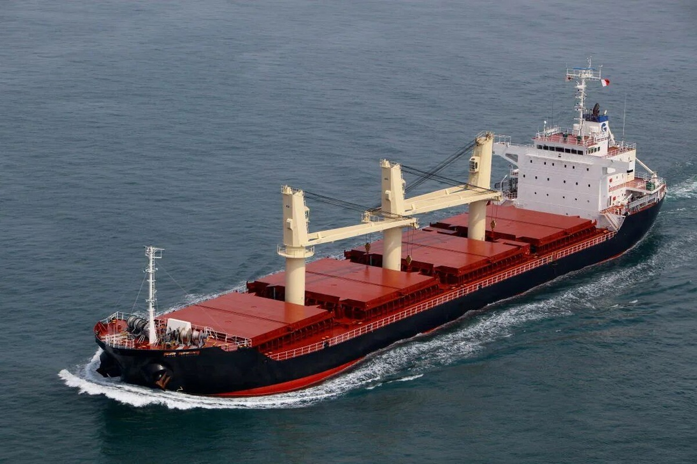

Плавание судов

Условие плавания судна
Плавание судов основано на том, что вес воды, вытесняемой подводной частью судна,
равен весу этого судна вместе с грузом в воздухе.
Если же вес судна вместе с грузом окажется больше веса вытесненной воды, то судно утонет.
Условие
Осадка - глубина, на которую судно погружается в воду
Осадка - глубина, на которую судно погружается в воду
Ватерлиния - красная линия на корпусе судна, показывающая наибольшую допустимую осадку судна
Водоизмещение - красная линия на корпусе судна, показывающая наибольшую допустимую осадку судна
Грузоподъёмность - вес полезного груза, перевозимого судном
Автор: тов. Robot Programmer